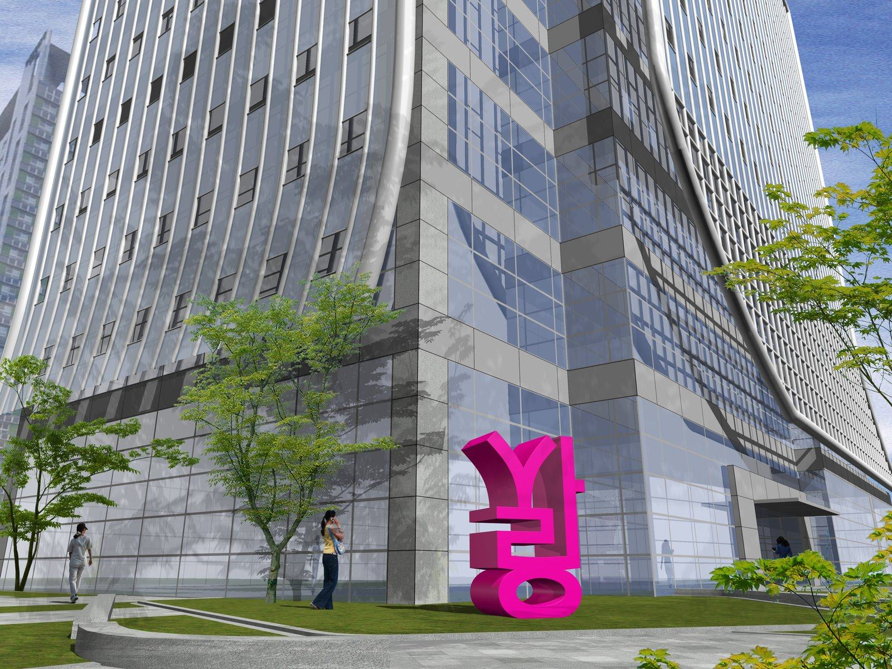

Project Sarang · 2026
《사랑》은 난해하지 않은 작품이다. 한국인이라면 보는 순간, '사랑'을 읽어낸다. 한국을 방문한 외국인에게도 '사랑'은 낯설지 않은 단어이다. 조형적으로 재구성된 한글의 자모 형태는 이방인들에게 즐거운 읽기 체험으로 연결될 수 있다.
물론 공공조각 《사랑》의 직관적인 외적 조형은 결코 단순하지 않은 의미를 품는다. 작가는 작품 상단의 'ㅅ'을 '사람 인(人)'으로도 사유하며, 천·지·인과 연결되는 원방각(○□△) 기본형의 결합 구조를 구현한다.
《사랑》의 옆에 사람이 선다. 혼자여도 좋고, 둘이라면 더 좋다. 함께 서는 순간, 새로운 사랑의 의미가 시작된다. 사진을 넘어서서, 스스로 작품이 되는 경험이다.
K-컬처가 세계를 움직이는 지금, 한글의 조형성이 도시와 기업의 얼굴이 된다. 《사랑》이 있는 곳에서 사람들은 연결된다.
01
BTS, <오징어 게임>, K-뷰티 등 K-콘텐츠, K-컬처의 시대. 세계는 한국어에 눈을 뜨고, 한국어의 매력에 호감을 갖는다. 하지만 한글 조형이 도시의 아이콘으로서 등장한 적은 없다. 《사랑》은 한글 조형성을 기반으로 한 작품화를 통해 새로운 문화 시대의 상징을 창출한다.
02
내국인, 외국인 모두 친숙하거나 낯선 장소에서의 경험을 추구한다. 공공조각 《사랑》은 포토존이 아닌 경험의 목적지로서, 그것이 위치한 장소성을 극대화한다.
03
사랑의 감정은 언어를 초월한다. 《사랑》은 그 단어가 환기하는 보편적 감정의 주제를 통해 갖은 상황에 놓인 사람들의 정서를 충족시킬 수 있다.

Installation Visualization · Seoul
공공조각 《사랑》은 장소에 제한성을 갖지 않는다.
당신의 도시, 당신의 공간에 《사랑》이 찾아온다.
01
성수의 《사랑》
성수동은 새롭고도 복합적인 문화적 트렌드가 추구되는 장소로서, 이미 세계인이 집결하는 서울의 핫플레이스이다. 글로벌 패션브랜드 매장, 팝업스토어, 카페, 식당 등 수많은 상가가 눈을 사로잡는 거리. 여기에서도 《사랑》은 성수동 특유의 건축물 조형을 배경으로 유니크한 예술적 존재감을 드러낸다. 또한 SNS 포토존 문화가 정착한 성수동에서 《사랑》은 자연스럽게 만남과 쉼의 장소가 될 것이다. 성동구의 도시 브랜딩 의지와 결합할 때, 《사랑》은 강력한 랜드마크로 완성된다.
02
서촌의 《사랑》
경복궁의 서쪽, 한옥과 골목이 살아 있는 서촌. 걷고, 생각하고, 멈추어 서고, 다시 걷고. 반짝이는 햇빛과 바람 속에 하루 종일 걸어도 지치지 않을 서촌의 어딘가에 《사랑》이 놓인다. 서촌은 역사적으로 문인과 예술가들의 예술 정신이 면면히 흐르는 곳이기도 하다. 오래된 것과 현대적인 것이 교차하고, 글과 그림의 예술적 흔적이 어우러지는 장소성 속에서 한글의 조형미를 품은 《사랑》은 그 직관적인 형태와 아름다운 색을 서촌에 더한다.
+
[ ]에 사랑이 왔어요
공공미술 《사랑》은 지역 커스터마이징이 가능한 구조이다. 서울 전역과 지방, 나아가 국외 어느 곳이든 《사랑》의 장소가 될 수 있다.
SIZE
자유 제작
설치 장소와 랜드마크로서의 제반 맥락에 맞게 최적의 크기로 제작됩니다.
MATERIAL
스틸 / FRP
고광택 도장 스틸 또는 FRP. 실외 설치에 적합한 내구성을 갖춥니다.
COLOR
커스텀 제작 가능
지역이나 기업 등의 브랜드 컬러를 적용한 제작이 가능합니다.
MAINTENANCE
관리 용이
설치 후 별도의 전문 인력 없이 관리가 가능하며, 유지 보수의 부담이 적습니다.
《사랑》 브랜드 에디션
지역, 기업 등의 브랜드 컬러와 아이덴터티를 반영하여 제작, 그 자체로 브랜드의 얼굴이 될 수 있다.
《사랑》 굿즈 연계
'사랑'이라는 주제가 환기하는 그대로 일상에 긍정적 감정과 미적 감각을 더해줄 굿즈를 기획, 제작한다.
《사랑》 틱톡 챌린지
#SaranginSeongsu 등 지역 태그 챌린지
야간 조명 설치
창의적인 조명 설계로 야간에도 색다른 포토존으로서 기능할 수 있으며, 24시간 도시 랜드마크로서의 존재감을 확보한다.
《사랑》을 당신의 곁으로